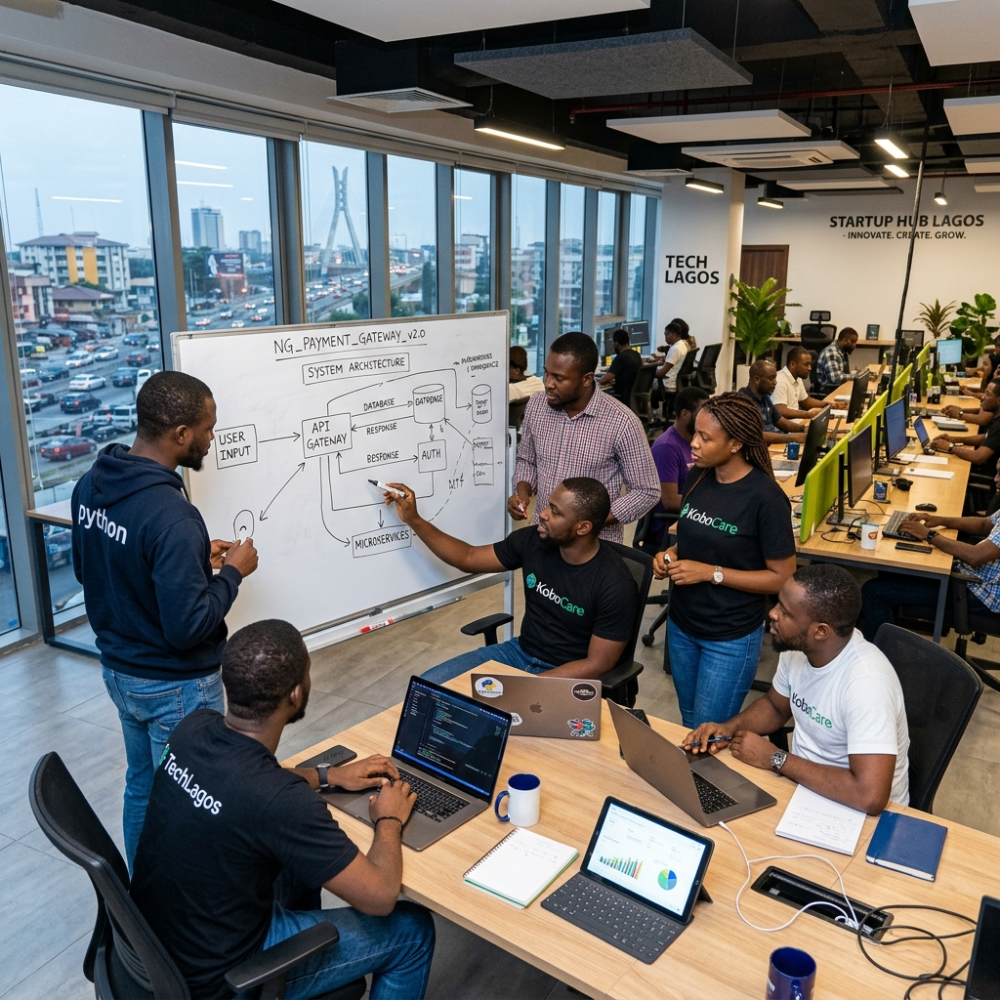
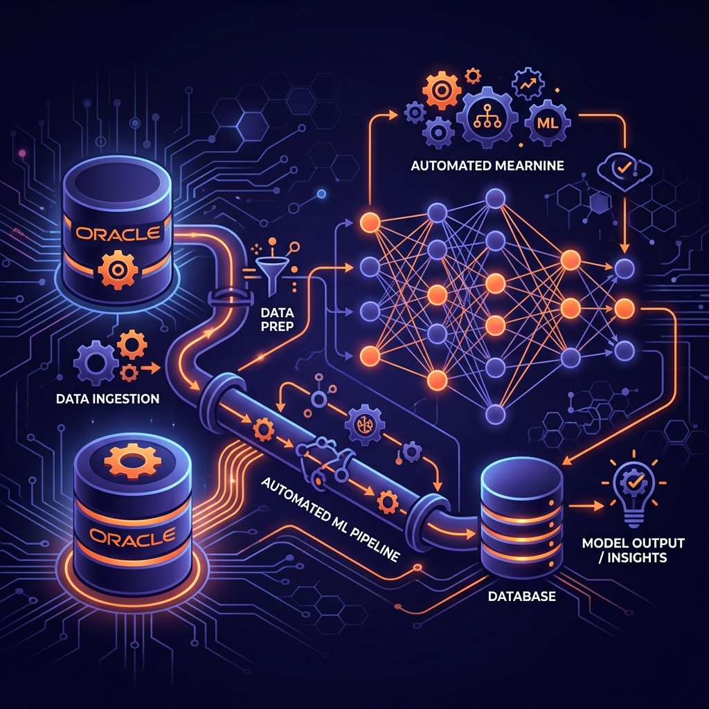

Deploy automated operational analytics, predictive pipelines, and machine learning systems built to eliminate workflow bottlenecks and improve transaction metrics.
Analyzing operations quality helps you identify structural lags, automate tasks, and monitor transactions in real-time.
Process and map large transactional datasets. We discover trends, find bottlenecks in supply chains, and optimize database management pipelines.
Eliminate operational lag. We apply business process automation models to streamline manual workflows, lowering administrative friction.
Use predictive thinking models to forecast sales, segment customers, and monitor KPIs using advanced live Oracle and Excel dashboards.
OptimaMind AI was established by Aderonke, a data researcher and process analyst with a deep background in transaction infrastructure.
Drawing on over a decade of hands-on experience managing operational records and financial data pipelines (including Oracle Applications, database systems, and Excel forecasting) at companies like New Home Distribution and Double Tap Events, Aderonke founded OptimaMind AI in early 2025.
Certified in Artificial Intelligence and Machine Learning, Aderonke leads our lab in developing custom algorithms that help businesses translate raw operations data into predictive actions.
Adjust operations metrics below to simulate efficiency gains and cost savings using our AI models.
Read how enterprises leverage OptimaMind AI to accelerate processing time and validate reporting.
"We never realized how much operational lag existed in our sales databases until we implemented OptimaMind AI's data audits. Our data processing runtimes decreased by 58% in weeks, and our administrative reporting is now completely error-free."
Sharing research on predictive models, database pipelines, and machine learning trends.

Analyzing how modern firms deploy edge AI pipelines to reduce transaction friction and secure databases.
Developing robust models to structure large sales datasets, helping targeting strategies.

Steps for data analysts to sync system records with live AI inference servers using secure APIs.
Submit your current system architecture details to arrange a sandbox demo with our research team.